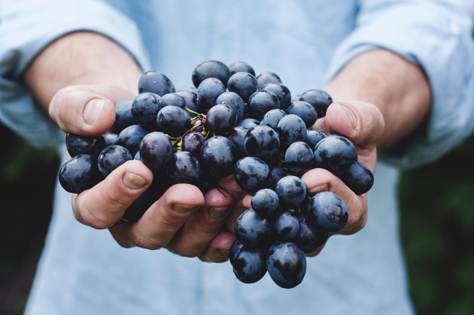

Licence requirement imposed for eating unprocessed food
Governments around the world have unanimously decided that growing and eating one's own food is a crime as it hinders the businesses of fast food chains and canned food industries. "This type of greedy behaviour cannot be allowed in society, we must be thoughtful of other people's means of livelihood", a spokesperson from the IMF said.